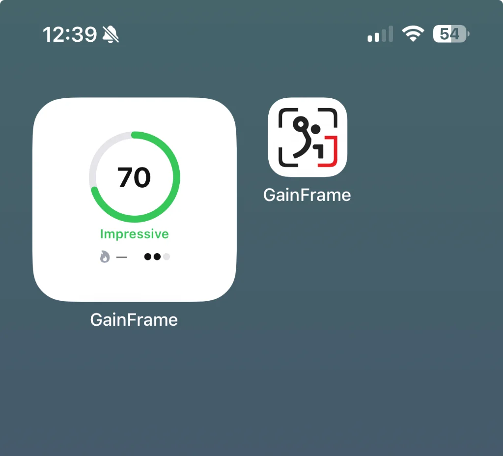
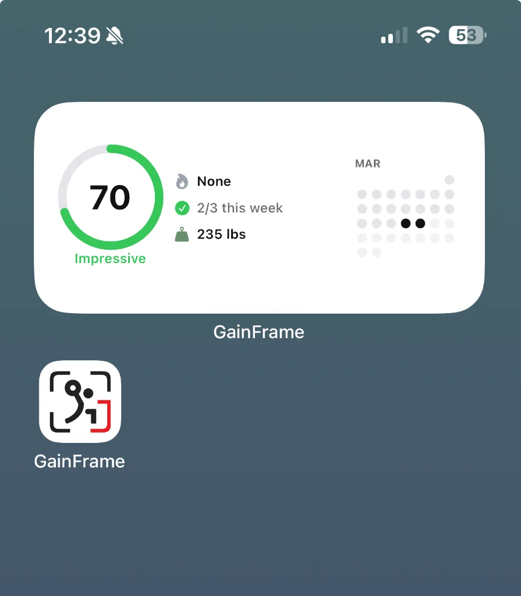

GainFrame Widgets: Your Physique Score on Your Home Screen
Your AI Physique Score, streak, and weight — visible every time you unlock your phone.
You check your physique score after a workout, feel good about the number, then forget it by Wednesday. Was it 68 or 72? Did you even check in this week? That's not a discipline problem. It's a visibility problem. GainFrame widgets solve this by putting your AI Physique Score (a single number calculated from your check-ins and weight trends) along with your streak and progress directly on your iPhone home screen, where you actually see them throughout the day.
Why Widgets Beat Notifications
Push notifications interrupt. They demand attention at inconvenient moments, get swiped away, and train you to ignore them. Widgets work differently. They sit quietly on your home screen, visible every time you unlock your phone to check the time, respond to a text, or open any app.
That passive presence shifts your relationship with your data from reactive to ambient. You're not being nagged. You're simply informed, dozens of times per day, with zero effort on your part. Many people find that environmental cues like this can work better than reminders when building consistent habits.
The Visibility Advantage
Most fitness apps hide behind a tap. You have to remember to open them, find your stats, and process what you see. That friction is small but cumulative. GainFrame widgets eliminate it entirely. Your physique score is just there, every glance, no effort required.
Passive Accountability in Action
The monthly calendar dot grid is quietly powerful. Seeing a streak of filled dots makes you want to keep it going. Seeing gaps creates a subtle urge to fill them. No alarm, no guilt trip, just a visual pattern that speaks for itself and motivates without interrupting.
What GainFrame Widgets Show
GainFrame offers two widget sizes, each designed for different use cases. The small widget prioritizes simplicity and minimal screen real estate. The medium widget provides a complete dashboard view with multiple data points. Both update automatically whenever you log a new check-in or weigh-in, so your home screen always reflects your current status. Choose based on how much information you want visible at a glance and how much home screen space you're willing to dedicate.
Small Widget — Score at a Glance

The compact view displays your latest AI Physique Score as a circular progress ring with your score label ("Impressive", "Strong", or similar). It's one of the most useful numbers in your fitness journey, visible without unlocking your phone, taking minimal space on your home screen.
Medium Widget — Full Dashboard

The expanded view adds meaningful context around your score:
- AI Physique Score with circular progress ring
- Check-in streak showing weekly progress (e.g., "2/3 this week")
- Current weight pulled automatically from HealthKit
- Monthly calendar dot grid displaying exactly which days you checked in
One glance tells you your score, your consistency, and your weight. No app required.
How to Add GainFrame Widgets
Once you know which size fits your style, setup takes about a minute. The process is identical to adding any iOS widget, and once placed, your widget will automatically refresh with each new check-in or weigh-in. You can add multiple widgets if you want both sizes visible, or place them on different home screen pages. Updates appear automatically after check-ins, though they may take a moment to refresh.
Quick Setup Steps
Follow these steps to get your widget live:
- Long-press any empty area of your home screen until apps start jiggling
- Tap the "+" button in the top-left corner
- Search for "GainFrame" in the widget gallery
- Choose small (score only) or medium (full dashboard) size
- Tap "Add Widget" and drag it wherever you want
- Tap "Done"
That's it. Your progress is now front and center.
Put Your Progress Where You'll See It
The gym is where you do the work, but progress happens in the 23 hours between sessions. Recovery, nutrition, consistency. GainFrame widgets keep your stats visible throughout your day, not buried in a folder on page three.
When your data is right there on your home screen, you naturally start noticing how daily choices affect weekly results. That passive awareness tends to build momentum in a way that notifications often don't.
Visibility drives consistency. Start with the small widget if you want a simple daily cue, or try the medium widget if you prefer seeing your streak and weight at a glance. Either way, your progress becomes impossible to ignore.
Your progress deserves more than a folder on page three. Put it front and center — and watch what consistent visibility does for consistent effort.